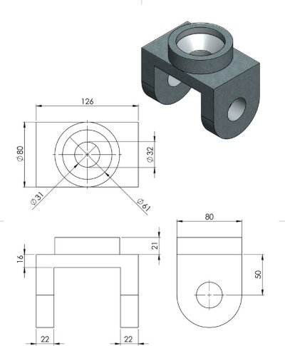

Short-term · Year 1 → Years 2–3
Goal 01 — SolidWorks certification pathway
Confident CAD skills early means SolidWorks becomes a tool I reach for in design courses and internships, rather than something still being learned when a project requires it. Dedicating eight to ten hours a week will guide me through the phases: sketching and basic extrusions to month three, revolutions and reference geometry to month six, assemblies and drawings to month nine, materials and mass properties to month eleven, timed mocks in month twelve. During exam weeks, study reduces to one maintenance session instead of nothing — and passing earns me an evening to rest, putting Yemm's advice on rewards into practice.
Continued. The same pathway carries on after the CSWA: Certified SolidWorks Professional at month 30, two and a half years from the first session, across three six-month stages — advanced parts, configurations, complex assemblies, one segment each. The closing phase goes to a specialisation (sheet metal, weldments or simulation) and a portfolio project.
